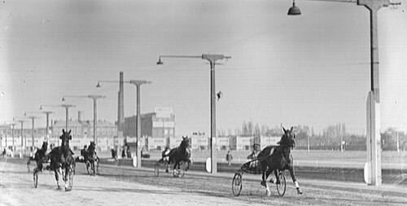

Kincsem Park
Magyarország lóversenyzésének központja, ahol egész évben izgalmas futamok várják a látogatókat.
Ahol tradíció, elegancia és izgalom találkozik.
A magyar lóversenyzés több mint másfél évszázados múltra tekint vissza. Az első hivatalos versenynapot 1827-ben tartották Pozsonyban, majd 1828-ban megalakult a Magyar Lovaregylet, amely meghatározó szerepet játszott a sportág hazai fejlődésében. A 19. század közepére Pest-Budán is kialakult a lóversenyélet központja, és 1881-ben megnyílt a máig ikonikus Kincsem Park, amely a modern magyar galopp- és ügetőversenyzés otthona.
A magyar tenyésztés aranykora a 19. század második felére esett, amikor világhírű telivérek kerültek ki hazai istállókból. Közülük a legismertebb Kincsem, a „csodakanca”, aki veretlenül, 54 győzelemmel írta be magát a lóversenysport történetébe.
A 20. század során a sportág többször átalakult, de mindvégig megőrizte hagyományait. A rendszerváltás után új lendületet kapott a versenyzés és a tenyésztés, a Kincsem Park pedig ismét az ország egyik jelentős sport- és szórakoztató központjává vált.
Ma a magyar lóversenyzés a hagyományok és a modern sportélmény találkozása, ahol a galopp és az ügetőversenyek továbbra is sokak számára jelentenek izgalmas, elegáns kikapcsolódást.